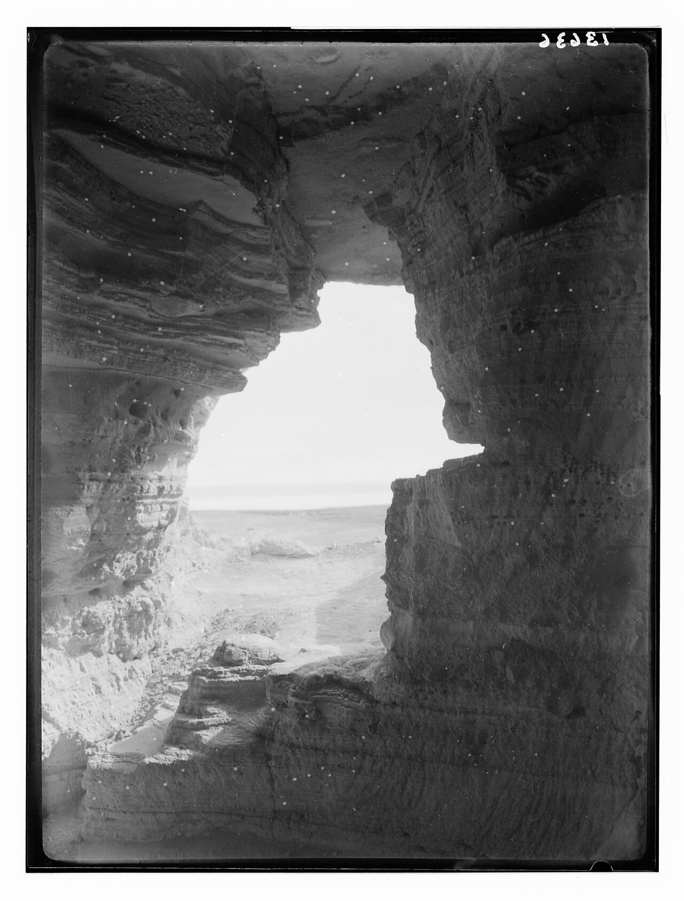
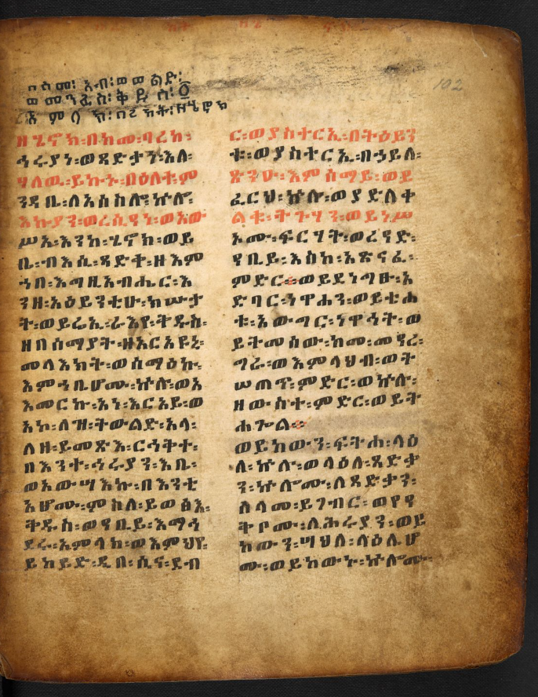
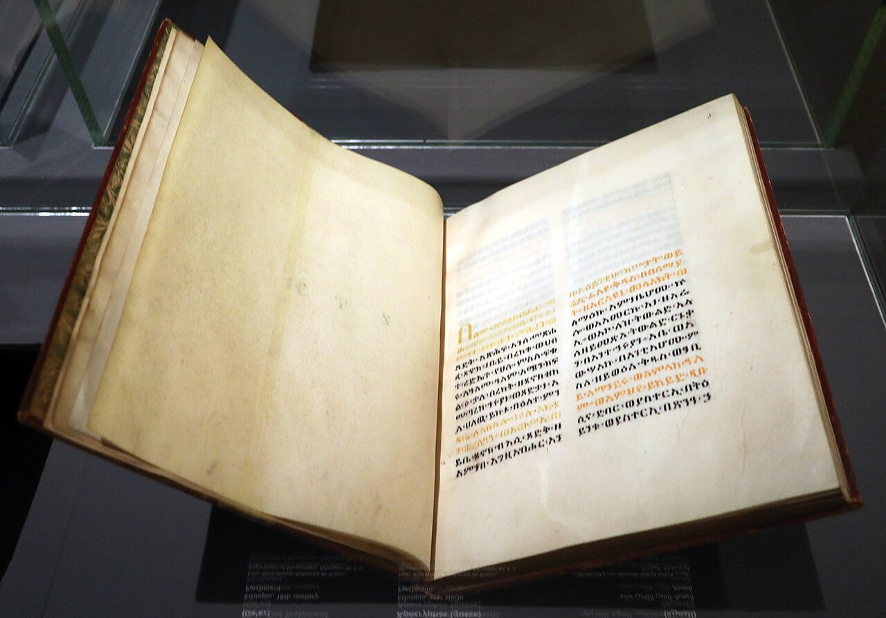

1. A pergunta que abre a leitura
Imagine uma comunidade vivendo sob grandes impérios, desigualdade e violência, sem poder decidir o rumo da política. Como explicar que pessoas injustas prosperem enquanto os vulneráveis sofrem? E como conservar esperança sem fingir que a injustiça é pequena?
1 Enoque responde por meio de uma imaginação grandiosa. O que parece apenas conflito na terra também tem uma dimensão celestial; os poderosos não estão fora do alcance do julgamento; a criação possui uma ordem que seres rebeldes perturbam, mas não podem controlar para sempre. Essa é a visão teológica do livro, não uma descrição histórica verificável do funcionamento do universo. Ler 1 Enoque 1 em português.
O texto não oferece um único enredo escrito de uma vez. É uma coleção de tradições atribuídas literariamente ao patriarca Enoque, personagem de Gênesis 5: alguém que “andou com Deus” e desapareceu porque Deus o tomou. A figura antiga funciona como escriba e viajante celeste, capaz de revelar segredos que leitores posteriores queriam compreender.
2. O mundo do Segundo Templo
Depois do exílio babilônico e do retorno sob os persas, Judá atravessou os períodos persa, helenístico e romano. O templo de Jerusalém voltou a existir; depois, o poder passou por novas transformações, incluindo o domínio de impérios estrangeiros e conflitos internos. Esse longo período, conhecido como época do Segundo Templo, foi fértil em escritos judaicos que interpretavam as Escrituras antigas, a história e o futuro.
Partes de 1 Enoque provavelmente foram compostas entre os séculos III e I a.C., mas não há uma data única para a coleção inteira. Cada seção pode ter trajetória própria. Manuscritos aramaicos de várias partes foram encontrados entre os Manuscritos do Mar Morto, mostrando que tradições enóquicas circulavam na Judeia antes da era cristã. A cópia de Qumran não prova que todos os grupos judeus concordavam sobre o livro ou seu estatuto.

“Apocalíptico” aqui não significa simplesmente catástrofe mundial. É um tipo de literatura que revela — esse é o sentido da palavra — uma realidade escondida: a história visível é julgada a partir de uma ordem divina mais ampla. O gênero pode consolar grupos vulneráveis e também adverti-los a não reproduzir a violência dos opressores.
3. O mapa das cinco partes
A forma etíope completa de 1 Enoque reúne cinco grandes blocos. As fronteiras e datas de cada parte são discutidas; o esquema abaixo é um guia para leitura, não uma afirmação de que um único autor as planejou juntas desde o início. Toque em “Ler em português” para abrir o começo de cada parte; a referência leva a uma tradução preliminar que informa sua fonte e seus limites.
Explica a corrupção da terra, a missão de Enoque e suas viagens pelas regiões celestes.
Ler em português: capítulo 1Visões de julgamento dos governantes e vindicação dos justos. A datação é especialmente debatida.
Ler em português: capítulo 37Apresenta os movimentos celestes como ordem revelada, com cosmologia antiga, não astronomia moderna.
Ler em português: capítulo 72Reconta épocas da humanidade e de Israel por meio de animais e pastores.
Ler em português: capítulo 83Exorta leitores a perseverar e contrapõe o fim dos injustos à vindicação dos fiéis.
Ler em português: capítulo 914. Os Vigilantes: quem responde pela violência?
O Livro dos Vigilantes começa retomando Gênesis 6:1–4, passagem breve e enigmática sobre “filhos de Deus”, mulheres humanas e os nefilins. Ler 1 Enoque 6–16 em português. 1 Enoque expande a cena: um grupo de seres celestes, os Vigilantes, abandona sua posição, toma mulheres e gera gigantes. O texto atribui a esses seres a transmissão de conhecimentos e práticas que intensificam a violência, a exploração e a corrupção da terra.
Azazel aparece ligado a armas, adornos e artes que podem ser usados para dominar (1 Enoque 8); outros anjos revelam saberes proibidos. A narrativa não precisa ser lida como uma história factual sobre a origem da tecnologia. Ela dramatiza uma questão moral: conhecimento e poder não são neutros quando se tornam instrumentos de violência e controle.
Os gigantes consomem os recursos da terra e depois voltam-se uns contra os outros. A violência se espalha para além de um ato individual. A resposta divina inclui julgamento dos Vigilantes e do mundo dos gigantes. Enoque, por sua vez, é enviado como escriba e mensageiro: comunica que os seres celestes não poderão escapar da responsabilidade.
Na narrativa, os humanos também são afetados por essa corrupção, mas não recebem uma explicação simples de que todo sofrimento vem de demônios. A pergunta central é sobre responsabilidade e justiça cósmica. Uma leitura atual deve evitar usar esse texto para culpar vítimas, justificar perseguições ou atribuir doença e calamidade a forças malignas.

Enoque percorre céus, abismos, prisões e limites do mundo. As viagens tornam visível uma resposta à injustiça: o universo não é uma máquina indiferente; há lugares de contenção e uma audiência final. Ao mesmo tempo, o livro não resolve todos os problemas filosóficos do sofrimento. Afirma que haverá julgamento, mas deixa aberta a experiência de quem ainda espera por ele.
5. Parábolas: os poderosos também serão julgados
As Parábolas ou Similitudes descrevem o “Ancião de Dias”, a corte celestial e figuras chamadas “Eleito”, “Justo” e “Filho do Homem” (1 Enoque 46; 48). A linguagem lembra passagens de Daniel 7 e coloca o juízo sobre governantes e opressores. Os títulos têm história complexa e não devem ser automaticamente igualados a uma interpretação cristã posterior; comunidades judaicas e cristãs leram essas imagens de formas distintas.
O foco social é forte: os que acumulam poder e riqueza, humilham os justos e acreditam que posição política os torna invulneráveis serão chamados a responder. A esperança não consiste simplesmente em escapar do mundo; consiste em imaginar que o poder não terá a palavra final e que os humilhados poderão ser reconhecidos.
A data das Parábolas permanece debatida. Ao contrário de outras seções, cópias delas não foram identificadas entre os fragmentos de Enoque de Qumran. Essa ausência não demonstra que a seção seja tardia ou inexistente na Antiguidade; limita o tipo de evidência disponível.
6. O Livro Astronômico: estrelas e ordem do mundo
Nos capítulos 72–82, um anjo explica a Enoque os cursos do sol, da lua, das estrelas, dos ventos e das estações. O texto descreve portas no horizonte e um calendário ideal de 364 dias. Para o autor, os astros obedecem a regras estáveis; a ordem do céu oferece contraste com a desordem moral produzida na terra.
É uma cosmologia antiga. Não deve ser confundida com ciência astronômica atual, nem ridicularizada por não corresponder a ela. O interesse literário é religioso: tempo, culto e criação pertencem a uma ordem que a comunidade deve aprender a reconhecer. Calendários diferentes também podiam marcar identidade e divergências entre grupos judaicos do período.

7. Visões dos Sonhos: a história contada por animais
Nos capítulos 83–90, Enoque sonha com o dilúvio e com uma longa narrativa simbólica da história. Seres humanos e povos são representados como animais; Israel aparece como rebanho; figuras de pastores supervisionam as ovelhas e são responsabilizadas por sua destruição. O recurso transforma uma história política dolorosa em visão moral.
A chamada “Apocalipse dos Animais” (85–90) parece acompanhar acontecimentos da história de Israel até uma crise sob domínio estrangeiro, mas a identificação de cada símbolo e o ponto exato de composição são debatidos. O final projeta julgamento e renovação, em vez de aceitar a opressão como normal.
A alegoria dá ao leitor uma posição dupla: ele reconhece sua história e, ao mesmo tempo, a observa como se estivesse diante de uma cena. Isso pode ajudar a pensar em padrões de poder; também pode endurecer fronteiras entre “nós, o rebanho justo” e “eles, os animais maus”. Uma leitura responsável examina como o símbolo funciona e evita transformá-lo em rótulo para povos atuais.
8. A Epístola de Enoque: perseverar sem romantizar a dor
Os capítulos finais (91–108) reúnem instruções, advertências contra a riqueza injusta e promessas aos justos. A “Apocalipse das Semanas” organiza a história em períodos e aponta para julgamento. O texto quer que a comunidade veja o presente como parte de um arco maior, no qual as escolhas importam e a injustiça será exposta.
Nos capítulos 106–107, uma tradição sobre o nascimento extraordinário de Noé aparece como apêndice narrativo. Sua relação com o restante da coleção é outro sinal de que o livro cresceu por camadas. A forma final preservada em ge’ez agrupa materiais que tiveram histórias distintas.
O consolo de Enoque não deve ser convertido em ordem para aceitar abuso. Esperar justiça futura e buscar proteção concreta não são atitudes incompatíveis. O texto fala de vindicação divina; uma aplicação atual também pode incluir apoio comunitário, defesa de direitos e cuidado de quem sofre.
9. Manuscritos, cânon e recepção
A cópia completa de 1 Enoque sobrevive em ge’ez, língua litúrgica etíope. Existem fragmentos gregos e cópias aramaicas, entre elas manuscritos encontrados em Qumran. A história textual ajuda a explicar por que o livro foi preservado por algumas comunidades e ficou menos acessível em outras regiões cristãs.
O cânon não é idêntico em todas as tradições. 1 Enoque integra a Bíblia da Igreja Ortodoxa Etíope Tewahedo e da Igreja Ortodoxa Eritreia Tewahedo. Não integra o cânon judaico, católico romano nem a maioria dos cânones protestantes e ortodoxos bizantinos. Essa diferença descreve histórias de recepção; não autoriza chamar uma comunidade de ignorante ou desonesta.
A Carta de Judas 14–15 cita uma profecia atribuída a Enoque, muito próxima de 1 Enoque 1:9. Isso demonstra que uma tradição enóquica era conhecida e utilizada por aquele autor; não resolve sozinho o estatuto canônico do livro em todas as igrejas. Citação e canonização são questões relacionadas, mas não idênticas.
10. Diálogo filosófico e psicológico
O problema do mal e a responsabilidade
O mito dos Vigilantes desloca parte da explicação da violência para agentes celestes. Essa moldura pode ajudar a imaginar um mal sistêmico que ultrapassa uma decisão individual. Mas também traz um risco: terceirizar toda responsabilidade a forças externas. O texto atribui culpa aos seres que descem, aos ensinamentos violentos e aos poderosos; o leitor atual pode perguntar que escolhas e instituições alimentam a injustiça.
Apocalíptica como imaginação moral
Filosoficamente, as visões recusam tratar a ordem política existente como natural ou eterna. A imagem de um tribunal além do palácio permite julgar o poder a partir de um padrão superior. Isso pode sustentar esperança e resistência; também pode ser usado para alimentar certeza sectária sobre quem será condenado. O gênero deve ser lido em seu contexto e com atenção aos seus efeitos.
Psicologia: tornar o caos narrável
Uma visão simbólica organiza o medo em cenas, personagens e finais. Em termos contemporâneos, narrativas podem ajudar comunidades a nomear sofrimento e manter identidade. Não temos base para diagnosticar os autores de 1 Enoque ou afirmar que o texto tenha sido escrito como terapia. Além disso, uma narrativa de julgamento não substitui segurança, escuta ou ajuda profissional diante de sofrimento psíquico.
11. Como ler Enoque hoje sem forçar o texto
Primeiro, pergunte qual parte está sendo lida: o livro não é homogêneo. Depois, identifique o gênero — visão, parábola, calendário, exortação — e o que sua imagem pretende realizar. Diferencie o que o texto afirma sobre Deus e o cosmos da reconstrução histórica dos estudiosos. Só então faça uma aplicação pessoal ou comunitária.
Enoque pode conversar com Isaías e Reis na preocupação com violência, governo, exílio e justiça, mas não é simplesmente uma continuação deles. Sua cosmologia e seu gênero pertencem a debates judaicos posteriores. A trilha inteira amplia a pergunta: não apenas como enfrentar uma ameaça ou sobreviver à perda, mas como sustentar esperança quando a reparação parece demorar.
12. Cinco perguntas práticas e uma síntese
- Responsabilidade: em que situação culpo apenas forças externas e deixo de examinar minha participação possível?
- Poder: que posição de privilégio ou autoridade deveria ser julgada pelos efeitos que produz nos vulneráveis?
- Esperança: consigo esperar mudança sem exigir que a dor seja chamada de necessária ou boa?
- Conhecimento: que saberes uso para cuidar e quais podem ser usados para dominar?
- Humildade interpretativa: quando uma imagem religiosa me parece apontar para um inimigo atual, que evidências e limites devo considerar antes de afirmá-lo?
Síntese: 1 Enoque é uma biblioteca de visões judaicas antigas sobre a origem da violência, a ordem da criação e o julgamento dos poderosos. Seu valor histórico está também em mostrar como comunidades do Segundo Templo imaginavam esperança. Lido com cuidado, ele não oferece um mapa secreto para prever o futuro; provoca a pergunta sobre responsabilidade e justiça quando o mundo visível parece favorecer o abuso.
Referências para continuar
Os links no mapa e ao longo do estudo abrem capítulos citados em português. A página informa que a tradução é preliminar e foi feita a partir da edição inglesa de R. H. Charles (1917); use-a como apoio de leitura e confira as fontes abaixo para pesquisa e contexto textual.
- Bíblia Etíope — 1 Enoque em português, capítulos 1–108; nota sobre tradução e fonte usada.
- Online Critical Pseudepigrapha — edição digital crítica e testemunhos textuais de 1 Enoque.
- Project Gutenberg — edição integral em inglês, tradução de R. H. Charles (1917). É uma tradução histórica de domínio público, útil para consulta, mas não substitui uma edição crítica moderna.
- Leon Levy Dead Sea Scrolls Digital Library — 4Q Enoch, manuscrito aramaico de Qumran.
- Library of Congress — fragmentos aramaicos de Enoque em Qumran.
- Gabriele Boccaccini — “Taking 1 Enoch Seriously”, ensaio acadêmico de contextualização.
- Manuscrito ge’ez da British Library — imagem e dados.
Como usar: os estudos e as imagens deste pacote funcionam sem internet. Os links para ler os capítulos e consultar manuscritos precisam de conexão.